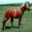
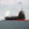
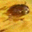
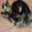

Strong
Learn the Itô integral→ paths converge
Drive the model and SDE with the same noise. Their individual trajectories should agree.
Integrating the SDE from a unit Gaussian ($t=0$) to a conformation of chignolin ($t=1$).
Strong Stochastic Flow Maps
learn the Itô integral!
Drive the model and SDE with the same noise. Their individual trajectories should agree.
Individual trajectories differ. Across many samples, the distribution of outcomes should agree.
strong ⊋ weak
Recall the deterministic flow map: integrate the vector field from $s$ to $t$ and jump there in one shot
The strong stochastic flow map (also known as an Itô map) integrates against the driving Brownian motion $\{\boldsymbol W_t\}$:
We parameterize the model as the mean drift and diffusion, i.e.,

different $\boldsymbol W$


| PMF error ↓ | 2 | 20 | 100 | 1000 |
|---|---|---|---|---|
| Diffusion | 16.728 | 3.400 | 0.084 | 0.066 |
| SSFM | 0.235 | 0.089 | 0.067 | 0.062 |
| JS × 10−2 ↓ | 2 | 20 | 100 | 1000 |
|---|---|---|---|---|
| Diffusion | 48.735 | 16.293 | 0.787 | 0.618 |
| SSFM | 1.990 | 0.860 | 0.640 | 0.590 |
SSFM at 100 NFE is competitive with diffusion at 1000 NFE — a 10× reduction in network evaluations.
| $\mathbb T$-W$_2$ ↓ | 1 | 2 | 4 | 8 | 16 | 32 | 64 | 100 |
|---|---|---|---|---|---|---|---|---|
| Diffusion | 4.737 | 5.882 | 5.587 | 2.716 | 1.793 | 1.714 | 1.699 | 1.735 |
| SSFM | 2.439 | 2.060 | 1.824 | 1.764 | 1.733 | 1.707 | 1.694 | 1.670 |
| tICA-W$_2$ ↓ | 1 | 2 | 4 | 8 | 16 | 32 | 64 | 100 |
|---|---|---|---|---|---|---|---|---|
| Diffusion | 1.976 | 19.147 | 3.236 | 0.712 | 0.323 | 0.262 | 0.266 | 0.330 |
| SSFM | 0.758 | 0.530 | 0.414 | 0.368 | 0.335 | 0.316 | 0.290 | 0.304 |
SSFM captures the backbone torus and slow tICA modes where the diffusion baseline fails.